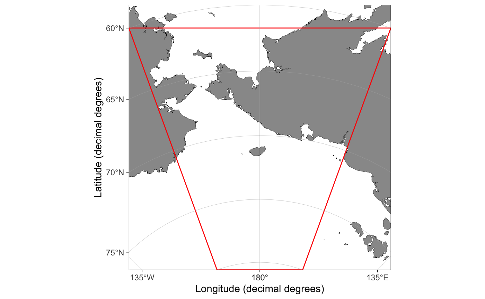
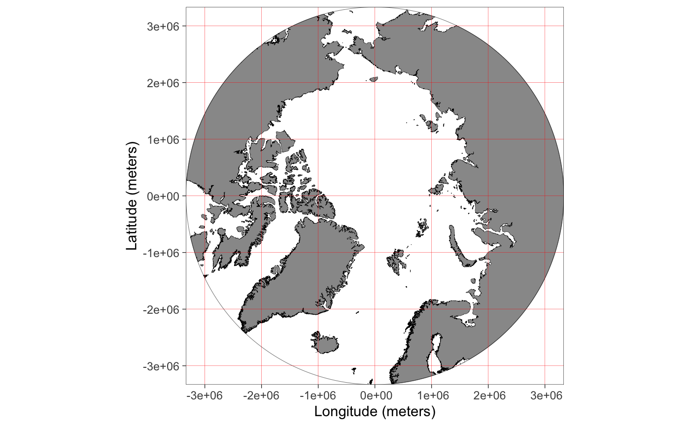
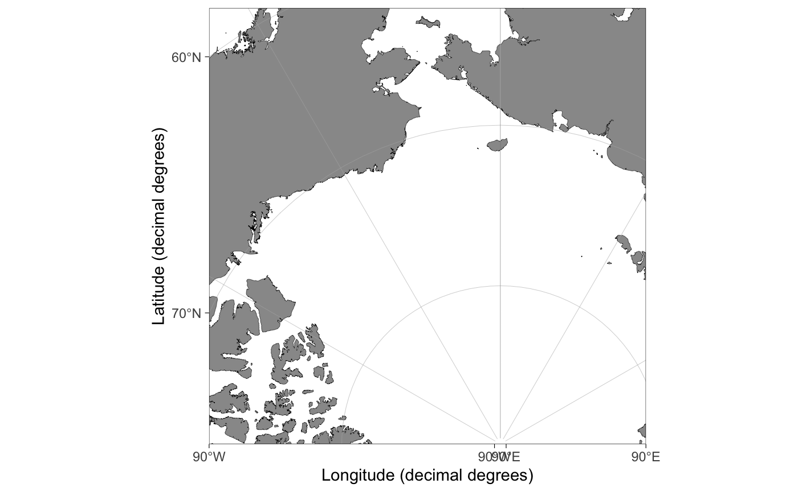
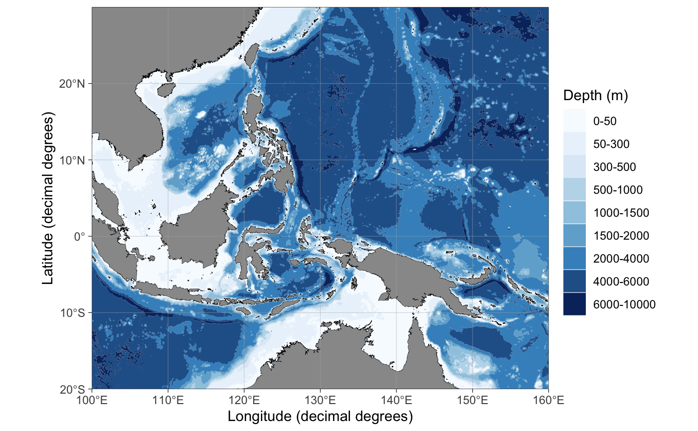
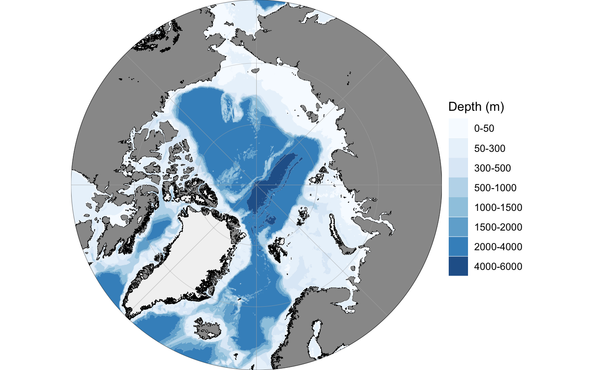
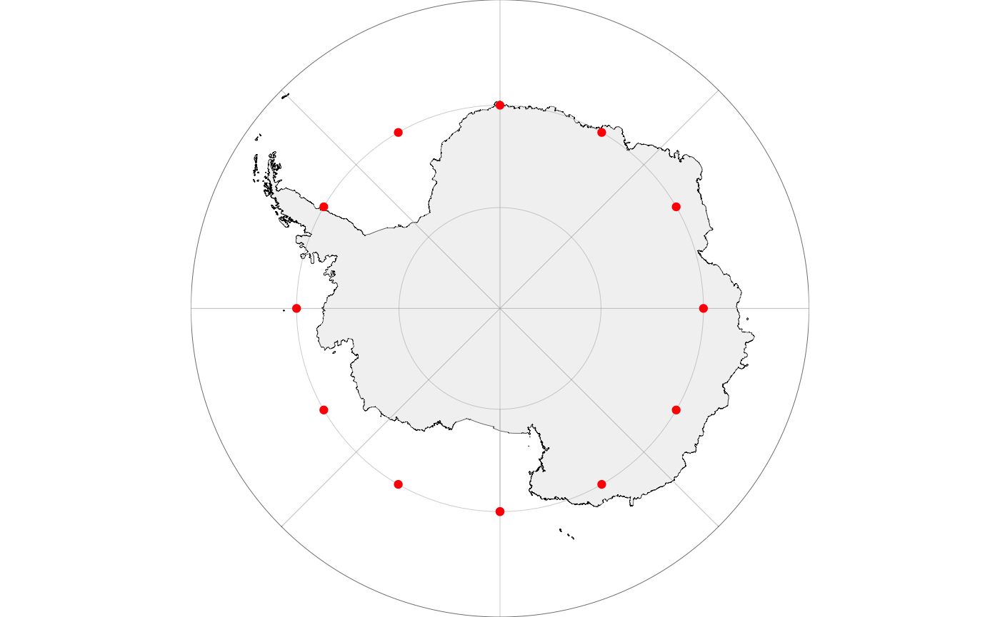
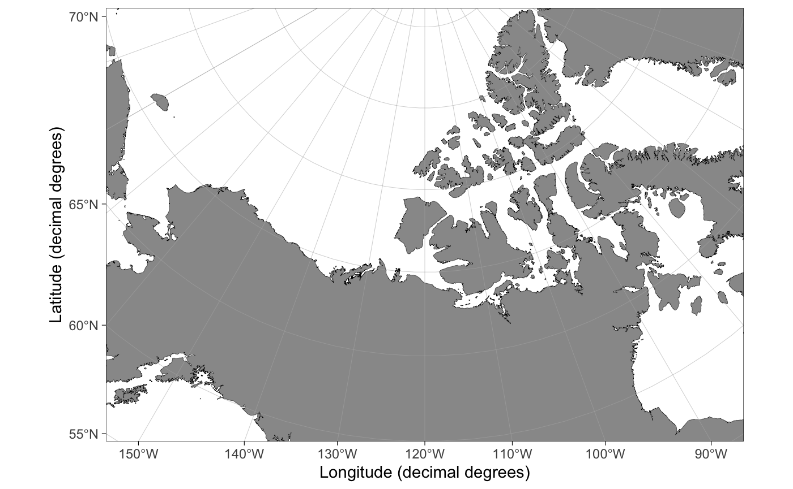

library(ggOceanMaps)
ggOceanMaps extends on ggplot2. Data that contain geographic information can be plotted on the maps generated by ggOceanMaps using the ggplot2 layers separated by the + operator. The package uses spatial shapefiles, GIS packages for R to manipulate, and the ggspatial package to help to plot these shapefiles. The shapefile plotting is conducted internally in the basemap function and uses ggplot’s sf object plotting capabilities.
The primary aim of ggOceanMaps is to make plotting oceanographic spatial data as simple as feasible, but also flexible for custom modifications. The “as simple as feasible” part will be covered in this section, while the “flexible for custom modifications” part is covered in the Advanced use section. The basic use section of this tutorial assumes that the user knows how to use ggplot. If you are not familiar with this package, you may read the Data visualization section in Hadley Wickham & Garrett Grolemund. This tutorial does not describe functions in ggOceanMaps but rather focusses on how to use them. Make sure to refer to the function documentation while reading the tutorial.
Limits
To ensure simplicity, ggOceanMaps package attempts to use decimal degree coordinate system as much as possible. This system represents coordinates on a sphere, while maps are plotted in two dimensions. Therefore, the underlying map data have to be projected using different mathematical algorithms depending on the geographic location. The simplest way of defining the geographic location is to use the limits argument with decimal degrees. The limits argument can be defined either as a numeric vector of length 1 or 4. Specifying the argument as a single integer between 30 and 88 or -88 and -30 plots a polar stereographic map for the Arctic or Antarctic, respectively.

Rectangular maps are plotted by specifying the limits argument as a numeric vector of length 4 where the first element defines the start longitude, the second element the end longitude, the third element the minimum latitude and the fourth element the maximum latitude of the bounding box:

Limiting maps using decimal degrees is somewhat counter-intuitive because maps plotted for polar regions (>= 60 or <= -60 latitude) are actually projected to Arctic and Antarctic polar stereographic systems. Because decimal degrees are angular units running counter-clockwise, also the longitude limits have to be defined counter-clockwise. Projected maps with decimal degree limits will lead to expanded limits towards the poles when using Arctic and Atlantic Polar Stereographic projections because decimal degrees represent a sphere:

The figure above: Limiting rectangular basemaps is done by placing four coordinates to the limit argument. A) If the limits are in decimal degrees, the longitude limits ([1:2]) specify the start and end segments of corresponding angular lines that should reside inside the map area. The longitude limits are defined counter-clockwise. The latitude limits [3:4] define the parallels that should reside inside the limited region given the longitude segments. Note that the resulting limited region (polygon with thick red borders) becomes wider than the polygon defined by the coordinates (thin red borders). The example limits are c(120, -120, 60, 80). B) If the limits are given as projected coordinates or as decimal degrees for maps with |latitude| < 60, limits elements represent lines encompassing the map area in cartesian space. The example limits are the limits from A) projected to the Arctic stereographic (crs = 3995). When limiting basemaps using data, the limits are calculated for the maximum reach of projected coordinates as in B but with an added buffer to place all points inside the map area.
As an example:
dt <- data.frame(lon = c(160, 160, -160, -160), lat = c(60, 80, 80, 60)) basemap(limits = c(160, -160, 60, 80)) + geom_spatial_polygon(data = dt, aes(x = lon, y = lat), fill = NA, color = "red")

Exact control of map limits can be difficult using decimal degree limits in polar regions. The limits argument also allows specifying the limits in the underlying projected coordinate units. First, we will need to find out how these units look like:
basemap(limits = 60, projection.grid = TRUE, grid.col = "red")

The projection.grid argument plots a grid using the projected actual map coordinates instead of decimal degrees. The grid helps in defining the limits using projected coordinates giving better control over the map limits than decimal degree coordinates. The automatic shapefile definition algorithm does not work for projected coordinates. Therefore, if the limits are not given as decimal degrees (any longitude outside the range [-180, 180] or latitude [-90, 90]), the function asks to specify shapefiles. The shapefiles can be defined by partially matching the names of the pre-made shapefiles in shapefile_list (e.g. “Ar” would be enough for “ArcticStereographic”):

Data limits
The limits of a map can also be defined by inputting a data frame to the data argument. The limits are automatically defined allowing the user to quickly find limits for a desired spatial dataset:
dt <- expand.grid(lon = c(160, -160), lat = c(60, 80)) basemap(data = dt) + geom_spatial_point(data = dt, aes(x = lon, y = lat), color = "red")

Note how the function expands the map to make all data fit inside the map area compared to a similar plot using the limits argument above. The function automatically detects columns containing longitude and latitude information. The automatic detection algorithm is not very advanced and it is recommended to use intuitive column names for longitude (such as “lon”, “long”, or “longitude”) and latitude (“lat”, “latitude”) columns. The coordinate data have to be given as decimal degrees for the data argument to function.
Bathymetry and glaciers
It is advised to limit your map first and only then plot bathymetry and glaciers to save the processing time of your computer (the bathymetry shapes can be large). Bathymetry is plotted simply by specifying bathymetry = TRUE:

Glaciers can be plotted using the glaciers argument:
basemap(limits = 60, glaciers = TRUE, bathymetry = TRUE)

Adding data to maps
The basemap(...) function works almost similarly to the ggplot(...) function as a base for adding further layers to the plot. The difference between the basemap() and the ggplot() is that the basemap() plot already contains multiple ggplot layers. All layers except bathymetry have no other aes mapping than x, y and group. Bathymetry is mapped to fill or color color in addition. This means that when you add ggplot layers, you need to specify the data argument explicitly as shown below. Another difference is that basemaps are plotted using projected coordinates. The ggspatial and ggplot’s geom_sf functions convert the coordinates automatically to the projected coordinates:
dt <- data.frame(lon = c(seq(-180, 0, 30), seq(30, 180, 30)), lat = -70) basemap(limits = -60, glaciers = TRUE) + geom_spatial_point(data = dt, aes(x = lon, y = lat), color = "red")

The ggplot functions can also be used, but the coordinates need to be transformed to the basemap projection first using the transform_coord function:
basemap(limits = -60, glaciers = TRUE) + geom_point(data = transform_coord(dt), aes(x = lon, y = lat), color = "red")

Note that the maps plotted in temperate and tropical regions are not projected. Consequently, decimal degrees work for such maps directly:
dt <- data.frame(lon = c(-100, -80, -60), lat = c(10, 25, 40)) basemap(data = dt) + geom_point(data = dt, aes(x = lon, y = lat), color = "red")

The transform_coord function detects the projection automatically, given that the map is limited using a similar range of coordinates. Therefore you can use the transform_coord as demonstrated above whenever using standard ggplot layers.
transform_coord(data.frame(lon = -80, lat = 25), bind = TRUE) #> lon lat lon.proj lat.proj #> 1 -80 25 -80 25
Rotating maps
The stereographic maps can be rotated to point towards north using the rotate argument:

A word of warning, however: the rotation involves reprojecting all shapefiles in their entirety and is memory consuming especially for large bathymetry shapes. Make sure to limit your map correctly before you add bathymetry. The rotation is still experimental and does not work for limits defined using projected coordinates or data. This functionality is likely to contain a whole lot of bugs.
Quick map
The qmap function is designed as a shortcut to quickly take a look at a spatial dataset similar to the ggplot’s qplot function. This function is supposed to automatically detect the type of data fed into the function and plot a map using appropriate geometries, limits, and projection. The function has not been developed properly yet and requires user feedback and testing.
qmap(dt, color = "red")

Citations and data sources
The data used by the package are not the property of the Institute of Marine Research nor the author of the package. It is, therefore, important that you cite the data sources used in a map you generate with the package. The spatial data used by this package have been acquired from the following sources:
- Land polygons. Natural Earth Data 1:10m Physical Vectors with the Land and Minor Island datasets combined. Distributed under the CC Public Domain license (terms of use).
- Glacier polygons. Natural Earth Data 1:10m Physical Vectors with the Glaciated Areas and Antarctic Ice Shelves datasets combined. Distributed under the CC Public Domain license (terms of use).
- Bathymetry. Amante, C. and B.W. Eakins, 2009. ETOPO1 1 Arc-Minute Global Relief Model: Procedures, Data Sources and Analysis. NOAA Technical Memorandum NESDIS NGDC-24. National Geophysical Data Center, NOAA. Distributed under the U.S. Government Work license.
Further, a citation to ggOceanMaps is required by the GPL-3 license used by the package whenever maps generated by the package are published. For up-to-date citation information, please use:
citation("ggOceanMaps") #> #> To cite package 'ggOceanMaps' in publications use: #> #> Mikko Vihtakari (2020). ggOceanMaps: Plot Data on Oceanographic Maps #> using ggplot2. R package version 0.3.0. #> https://github.com/MikkoVihtakari/ggOceanMaps #> #> A BibTeX entry for LaTeX users is #> #> @Manual{, #> title = {ggOceanMaps: Plot Data on Oceanographic Maps using ggplot2}, #> author = {Mikko Vihtakari}, #> year = {2020}, #> note = {R package version 0.3.0}, #> url = {https://github.com/MikkoVihtakari/ggOceanMaps}, #> }